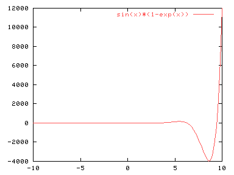
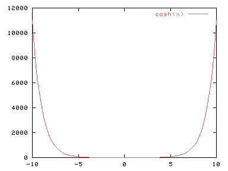

La orden para realizar representaciones bidimensionales es plot. Su uso más simple es el siguiente:
plot funcion
Por ejemplo, para representar sin(x)*(1-exp(x)):
plot sin(x)*(1-exp(x))
Debería aparecer algo parecido a:

Como segundo ejemplo, veamos qué aspecto tiene un coseno hiperbólico
plot cosh(x)

La escala elegida para esta gráfica no demasiado buena. Nos dice que para valores grandes de X la función toma valores muy grandes, pero si queremos ver lo que pasa en un entorno de 0, tendremos que cambiar la escala. gnuplot utiliza un mecanismo de autoescalado que ajusta la gráfica de forma que quepa en la superficie de dibujo. La sintaxis para cambiar la escala es la siguiente:
plot [x1:x2][y1:y2] funcion.
plot [x1:x2] funcion (para ajustar el eje X).
plot [][y1:y2] funcion (para ajustar el eje y).
Nótese que si se cambia la escala para un gráfico, permanecerá cambiada para las siguientes representaciones. Para volver a la escala original existen los comandos:
set xrange [-10:10] para la coordenada X.
set yrange [-10:10] para la coordenada Y. Al igual que el anterior fija el valor del rango para la coordenada especificada.
set autoscale para permitir que los ejes se autoajusten para que la gráfica quede lo mejor posible dentro del área de dibujo. Es posible especificar los ejes a los que se permite el autoescalado.
Para más información se deberá consultar la ayuda en línea.
Si se quiere ver el aspecto de la función cosh(x) para y=[0,10]:
plot [][0,10] cosh(x).